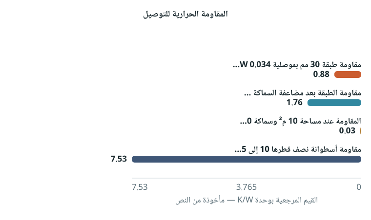

المقاومة الحرارية للتوصيل
Conduction Thermal Resistance
مقاومة طبقة مستوية لمرور الحرارة بالتوصيل، تساوي سماكتها مقسومة على حاصل ضرب موصليتها ومساحتها: R = L/(k·A)، وحدتها كلفن لكل واط، وتُجمع على التوالي كما تُجمع مقاومات الدائرة.
المقاومة الحرارية للتوصيل في طبقة مستوية مقدار يعوق مرور الحرارة عبرها، ويعرَّف R = L/(k·A)، بوحدة كلفن لكل واط. يعرضه Janna بالمعادلة (2.12a) في الفصل الثاني، ويعرضه Holman في سياق التشبيه الكهربائي: q = ΔT/R_total كما I = V/R في الدائرة. والتشبيه ليس مجازًا: الثلاثة (الفيض والفرق الحراري والمقاومة) تتبع قانونًا جمعيًا واحدًا، فتُجمع المقاومات المتتالية جمعًا مباشرًا، وتُجمع المقاومات المتوازية بالمقلوب.
مثال محلول: طبقة سماكتها 0.03 m وموصليتها 0.034 W/(m·K) ومساحتها 1 m²: R = 0.03/(0.034×1) = 0.8824 كلفن/واط. وعند فرق حراري 105 كلفن يكون q = 105/0.8824 = 119.0 واط، والفيض 119 واط/م². ولو ضُوعفت السماكة إلى 0.06 m لتضاعفت المقاومة إلى 1.765 كلفن/واط وانخفضت القدرة إلى 59.5 واط، أي أن القدرة تتناسب عكسيًا مع السماكة.
ومثال ثانٍ يبيّن أثر المساحة: عند موصلية 0.8 W/(m·K) ومساحة 10 m² وسماكة 0.2 m تصير R = 0.2/(0.8×10) = 0.025 كلفن/واط، فيعبر 20 كلفن قدرة 800 واط. المساحة هنا ليست تفصيلًا: مضاعفتها تنصّف المقاومة وتضاعف القدرة عند الفرق الحراري نفسه.
كيف تعمل الظاهرة؟
قانون فورييه في بعد واحد يقول q = −k·A·dT/dx، وفي طبقة مستوية موصليتها ثابتة يكون الميل خطًّا، فيصير q = k·A·ΔT/L. إعادة ترتيب العلاقة على صورة «فرق الدافع مقسوم على عائق» تعطي ΔT = q·(L/(k·A)) = q·R، وهي بنية قانون أوم نفسه. معنى ذلك أن المقاومة ليست خاصية مادة فقط: هي خاصية مادة وهندسة معًا، فالسماكة تزيدها والمساحة تقللها والموصلية تقللها. وفيزيائيًا: كلما زاد عدد حاملات الطاقة وقصر مسارها، مرّت الطاقة أسرع. وحين تُضاف طبقة ثانية على التوالي، يمر الفيض نفسه عبرها، فتضاف مقاومة الطبقة الجديدة إلى الأولى ويُقتسم الفرق الحراري عليهما بنسبة مقاومتيهما. وفي التوازي، تتوزع المساحة فتقل المقاومة الكلية، ويُجمع مقلوب المقاومتين.
العلاقة بالأرقام
الخطوات: (1) R = L/(k·A) = 0.03/(0.034×1) = 0.88235 K/W. (2) q = ΔT/R = 105/0.88235 = 119.0 واط. (3) q'' = q/A = 119/1 = 119 W/m²، وهو نفسه ΔT/(L/k) = 105/0.88235. (4) مضاعفة السماكة: R = 0.06/0.034 = 1.7647 K/W، وq = 105/1.7647 = 59.5 واط، أي نصف القدرة تمامًا. (5) المساحة 4 m²: R = 0.03/(0.034×4) = 0.22059 K/W، وq = 105/0.22059 = 476.0 واط، أي أربعة أمثال. (6) المثال الثاني: R = 0.2/(0.8×10) = 0.025 K/W؛ q = 20/0.025 = 800 واط؛ q'' = 80 W/m². (7) مقاومة الأسطوانة للمقارنة: بنصف قطر داخلي 0.01 m وخارجي 0.05 m وطول 1 m وk = 0.034: R = ln 5/(2π×0.034×1) = 1.6094/0.2136 = 7.53 K/W، أي أكبر بثماني مرات من الطبقة المستوية بالسماكة نفسها.
مفاهيم متقاربة
الخلط الأول: الإشارة إلى «مقاومة» الجدار وقيمتها؛ مقاومة الوحدة المساحية R'' = L/k = 0.882 m²·K/W لجدار مساحته 1 m² لها الرقم نفسه، لكنها تختلف في الوحدة والمعنى بمجرد أن تتغير المساحة: لجدار 4 m² تصير R = 0.221 K/W بينما تبقى R'' = 0.882. الخلط الثاني: مقاومة الحمل السطحي، فالجمع بينها وبين مقاومة التوصيل صحيح في السلسلة، لكن اعتبارها مقاومة مادة خطأ. الخلط الثالث: مقاومة الأسطوانة، حيث R تعتمد على لوغاريتم النسبة لا على السماكة خطيًا. الخلط الرابع: التشبيه الكهربائي، فتشابه الصيغة لا يجعل الحرارة شحنة، والمقاومة الحرارية تعتمد على الفرق الحراري نفسه إذا تغيرت k بالحرارة. الخلط الخامس: الموصولية الحرارية k التي هي خاصية مادة لا مقاومة، والخلط بينهما يقلب أثر السماكة.
حدود التطبيق
تنكسر العلاقة إذا لم تكن الحالة مستقرة: فالمقاومة الحرارية الصرفة لا تحمل سعة، والحرارة المختزنة في الطبقة تُبطئ التسخين، وتُستعمل عندئذٍ المعاوقة الحرارية بدل المقاومة. وتنكسر إذا لم يكن الجريان أحادي البعد: قرب الزوايا والحواف والجسور الحرارية تنتشر الحرارة جانبيًا فلا تصف L/(kA) المسألة. وتنكسر إذا كانت k متغيرة بالحرارة تغيرًا كبيرًا، فتصير المقاومة لا خطية ويجب التكامل: R = ∫dx/(k(x)·A). وتنكسر إذا وُجد توليد داخلي، فالتوزيع يصير قطعًا مكافئًا لا خطًّا والمقاومة تفقد معناها البسيط. وتنكسر في مقاومة التلامس عند الواجهات غير المثالية، وفي المساحات المتغيرة كالمخروط والزعانف حيث يتغير A مع x. وأخيرًا لا تنطبق عند أبعاد تقترب من مسار المائع الحر (عدد نوسلت صغير جدًا) حيث لا يبقى الحمل مقاومة سطحية خطية.

| الكمية | القيمة | المصدر |
|---|---|---|
| مقاومة طبقة 30 مم بموصلية 0.034 W/(m·K) ومساحة 1 م² | 0.8824 K/W | [1] |
| القدرة العابرة لتلك الطبقة عند فرق 105 كلفن | 119.0 W | [1] |
| مقاومة الطبقة بعد مضاعفة السماكة إلى 60 مم | 1.765 K/W | [1] |
| المقاومة عند مساحة 10 م² وسماكة 0.2 m وk = 0.8 | 0.025 K/W | [1] |
| القدرة العابرة في الحالة السابقة عند فرق 20 كلفن | 800 W | [1] |
| المقاومة النوعية للوحدة المساحية للطبقة الأولى | 0.882 m²·K/W | [1] |
| مقاومة أسطوانة نصف قطرها 10 إلى 50 مم بطول 1 m وk = 0.034 | 7.53 K/W | [1] |
المصادر
استشهد بهذا المصطلح
الصيغتان مبنيتان من بيانات الصفحة نفسها: العنوان والتاريخ ورابط النسخة المنشورة.
المقاومة الحرارية للتوصيل — Conduction Thermal Resistance. (2026). ديوان المعرفة — انفراد. https://infiradev.com/diwan/terms/term-conduction-resistance.html
@misc{term-conduction-resistance2026,
title = {المقاومة الحرارية للتوصيل},
titleaddon = {Conduction Thermal Resistance},
howpublished = {{ديوان المعرفة — انفراد} — مرجع علمي عربي},
year = {2026},
url = {https://infiradev.com/diwan/terms/term-conduction-resistance.html},
urldate = {2026-11-26},
note = {مراجعة علمية: hermes — مراجعة آلية بالتكليف 2026-11-26}
}
راجعه: hermes — مراجعة آلية بالتكليف 2026-11-26 · 2026-11-26 · آخر تحديث 2026-11-26